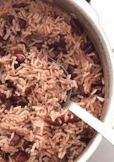

Rice & Peas

his traditional Jamaican Rice and Peas recipe gets a woodsy and fruity flavor from allspice berries, thyme and Scotch bonnet peppers.
Ingridients
- 2 cups uncooked jasmine rice
- 1 tablespoon olive oil
- 3 cloves garlic, minced
- 1 (28 ounce) can kidney beans, drained
- 3 sprigs fresh thyme leaves
Steps
- Rinse rice in a fine strainer.
- Heat oil in a large 5-quart saucepan over medium heat. Add garlic, green onions, and thyme; cook until wilted, about 2 minutes.
- Add the rice, kidney beans, stock, coconut milk, Scotch bonnet pepper, salt, sugar, black pepper, red pepper flakes, allspice, and cayenne pepper.
- Bring to a boil, uncovered. Reduce heat to low and cover. Simmer until rice is tender and liquid has evaporated, about 20 minutes.
- Serve with Main dish!